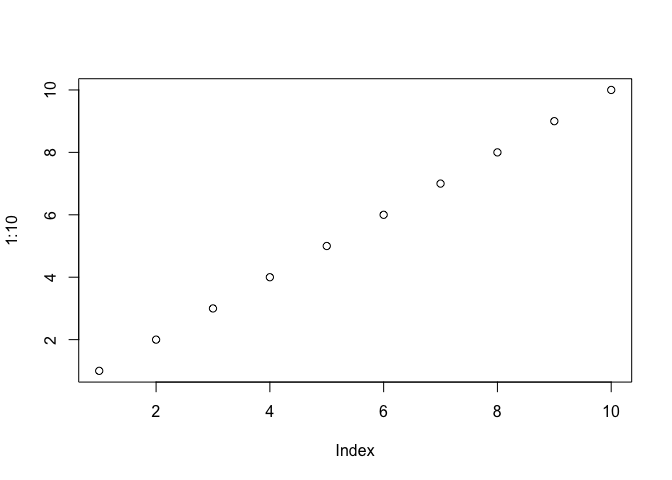

Writing figures to file
It is not always appropriate or sufficient for figures to exist only inside a dynamic report, such as an R Markdown document. You should know how to write key figures to file for downstream use in a variety of settings.
During development, you need the immediate feedback from seeing your figures appear in a screen device, such as the RStudio Plots pane. Once you’re satisfied, make sure you have saved in an R script all of the commands to produce the figure. You want everything, nachos to cheesecake: data import, any manipulation that necessary, then plotting.
Now what? How to preserve the figure in a file?
Step away from the mouse

Do not succumb to the temptation of a mouse-based process. If might feel handy at the time, but you will regret it. This establishes no link between the source code and the figure product. So when – not if – you need to remake the figure with a different color scheme or aspect ratio or graphics device, you will struggle to dig up the proper source code. Use one of the methods below to avoid this predicament.
Graphics devices
Read the R help for Devices to learn about graphics devices in general and which are available on your system (obviously requires you read your local help).
It is very important to understand the difference between vector graphics and raster. Vector graphics are represented in terms of shapes and lines, whereas raster graphics are pixel-based.
- vector examples: PDF, postscript, SVG
- Pros: re-size gracefully, good for print.
- raster examples: PNG, JPEG, BMP, GIF
- Cons: look awful “blown up” … in fact, look awful quite frequently
- Pros: play very nicely with Microsoft Office products and the web
Tough love: you will not be able to pick vector or raster or a single device and use it all the time. You must think about your downstream use cases and plan accordingly. It is entirely possible that you should save key figures in more than one format for maximum flexibility in the future. Worst case, if you obey the rules given here, you can always remake the figure to save in a new format.
FWIW most of my figures exist as pdf(), png(), or both.
Here are two good posts from the Revolutions Analytics blog with tips for saving figures to file:
Write figures to file with ggsave()
If you are using ggplot2, write figures to file with ggsave().
If you are staring at a plot you just made on your screen, you can call ggsave(), specifying only a filename:
ggsave("my-awesome-graph.png")It makes a sensible decision about everything else. In particular, as long as you use a conventional extension, it will guess what type of graphics file you want. If you need control over, e.g., width, height, or dpi, roll up your sleeves and use the arguments.
Passing a plot object to ggsave()
After the filename, the most common argument you will provide is plot =, which is the second argument by position. If you’ve been building up a plot with the typical ggplot2 workflow, you will pass the resulting object to ggsave(). Example:
p <- ggplot(gDat, aes(x = year, y = lifeExp)) + geom_jitter()
# during development, you will uncomment next line to print p to screen
# p
ggsave("imp/fig-io-practice.png", p)See below for gotchas and FAQs when making figures in a non-interactive setting!
Scaling with ggsave()
The last argument I want to feature is scale =. This actually changes the physical size of the plot, but more importantly, it changes the size of the title and axis labels, relative to the entire plot area. Therefore, tweaking this can be a quick-and-dirty way to get different versions of a figure appropriate for a presentation versus a poster versus a manuscript. You can still insert the figure downstream with a different physical size, though you may need to adjust the dpi accordingly on the front end. When scale < 1, various plot elements will be bigger relative to the plotting area; when scale > 1, these elements will be smaller. YMMV but scale = 0.8 often works well for posters and slides. Here are two versions of a figure, with grossly exaggerated values of scale, to illustrate its effect.
suppressPackageStartupMessages(library(ggplot2))
gDat <- read.delim("gapminderDataFiveYear.tsv")
p <- ggplot(gDat, aes(x = year, y = lifeExp)) + geom_jitter()
p1 <- p + ggtitle("scale = 0.3")
p2 <- p + ggtitle("scale = 2")
ggsave("img/fig-io-practice-scale-0.3.png", p1, scale = 0.3)
## Saving 2.1 x 1.5 in image
ggsave("img/fig-io-practice-scale-2.png", p2, scale = 2)
## Saving 14 x 10 in image

|

|
Thanks to Casey Shannon for introducing me to scale =.
Write non-ggplot2 figures to file
Recall that ggsave() is recommended if you’re using ggplot2. But if you’re using base graphics or lattice, here’s generic advice for writing figures to file. To be clear, this also works for ggplot2 graphs, but I can’t think of any good reasons to NOT use ggsave().
Edit your source code in the following way: Precede the figure-making code by opening a graphics device and follow it with a command that closes the device. Here’s an example:
pdf("test-fig-proper.pdf") # starts writing a PDF to file
plot(1:10) # makes the actual plot
dev.off() # closes the PDF file
## pdf
## 2You will see there’s a new file in the working directory:
list.files(pattern = "^test-fig*")
## [1] "test-fig-proper.pdf"If you run this code interactively, don’t be surprised when you don’t see the figure appear in your screen device. While you’re sending graphics output to, e.g., the pdf() device, you’ll be “flying blind”, which is why it’s important to work out the graphics commands in advance. This is like using sink(), which diverts the output you’d normally see in R Console.
Read the R help for Devices to learn about graphics devices in general and which are available on your system (obviously requires you read your local help). If you need control over, e.g., width, height, or dpi, roll up your sleeves and use the arguments to the graphics device function you are using. There are many.
If you are staring at a plot you just made on your screen, here’s a handy short cut for writing a figure to file:
plot(1:10) # makes the actual plot
dev.print(pdf, # copies the plot to a the PDF file
"test-fig-quick-dirty.pdf")
## pdf
## 2You will see there’s now another new file in the working directory:
list.files(pattern = "^test-fig*")
## [1] "test-fig-proper.pdf" "test-fig-quick-dirty.pdf"The appeal of this method is that you will literally copy the figure in front of your eyeballs to file, which is pleasingly immediate. There’s also less code to repeatedly (de-)comment as you run and re-run the script during development.
Why is this method improper? Various aspects of a figure – such as font size – are determined by the target graphics device and its physical size. Therefore, it is best practice to open your desired graphics device explicitly, using any necessary arguments to control height, width, fonts, etc. Make your plot. And close the device. But for lots of everyday plots the dev.print() method works just fine.
If you call up the help file for dev.off(), dev.print(), and friends, you can learn about many other functions for controlling graphics devices.
Pre-emptive answers to some FAQs
Despair over non-existent or empty figures
Certain workflows are suited to interactive development and will break when played back non-interactively or at arm’s length. Wake up and pay attention when you cross these lines:
- You package graph-producing code into a function or put it inside a loop or other iterative machine.
- You run an R script non-interactively, e.g. via
source(),Rscript, orR CMD batch.
Basic issue: When working interactively, if you inspect the plot object p by entering p at the command line, the plot gets printed to screen. You’re actually enjoying the result of print(p), but it’s easy to not realize this. To get the same result from code run non-interactively, you will need to call print() explicitly yourself.
Here I wrap plotting commands inside a function. The function on the left will fail to produce a PNG, whereas the function on the right will produce a good PNG. Both assume the Gapminder data is present as gDat and that ggplot2 has been loaded.
|
|
Other versions of this fiasco result in a figure file that is, frustratingly, empty. If you expect a figure, but it’s missing or empty, remember to print the plot explicitly.
It is worth noting here that the ggsave() workflow is not vulnerable to this gotcha, which is yet another reason to prefer it when using ggplot2.
Some relevant threads on stackoverflow:
Mysterious empty Rplots.pdf file
When creating and writing figures from R running non-interactively, you can inadvertently trigger a request to query the active graphics device. For example, ggsave() might try to ascertain the physical size of the current device. But when running non-interactively there is often no such device available, which can lead to the unexpected creation of Rplots.pdf so this request can be fulfilled.
I don’t know of a reliable way to suppress this behavior uniformly and I just peacefully coexist with Rplots.pdf when this happens. That is, I just delete it.
Some relevant threads on stackoverflow:
Chunk name determines figure file name
Coming full circle, we return to the topic of figures produced via an R chunk in an R Markdown file. If you are keeping the intermediate markdown, via keep.md: true in the YAML frontmatter, your figures will also be saved to file. Rendering foo.Rmd will leave behind foo.md, foo.html, and a directory foo_files, containing any figures created in the document. By default, they will have meaningless names, like unnamed-chunk-7.png. This makes it difficult to find specific figures, i.e. for unplanned use in another setting. However, if you name an R chunk, this name will be baked into the figure file name.
Example: here’s an R chunk called scatterplot-lifeExp-vs-year
`
``{r scatterplot-lifeExp-vs-year}
p <- ggplot(gDat, aes(x = year, y = lifeExp)) + geom_jitter()
p
```And it will lead to the creation of a suitably named figure file (you may see other figures produced in the document as well):
list.files("block017_write-figure-to-file_files/", recursive = TRUE)
## [1] "figure-html/dev-print-demo.png"
## [2] "figure-html/scatterplot-lifeExp-vs-year.png"If you have concrete plans to use a figure elsewhere, you should probably write it to file using an explicit method described above. But the chunk-naming trick is a nice way to avoid that work, while maintaining flexibility for the future.
Clean up
Let’s delete the temp files we’ve created.
file.remove(list.files(pattern = "^test-fig*"))
## [1] TRUE TRUE